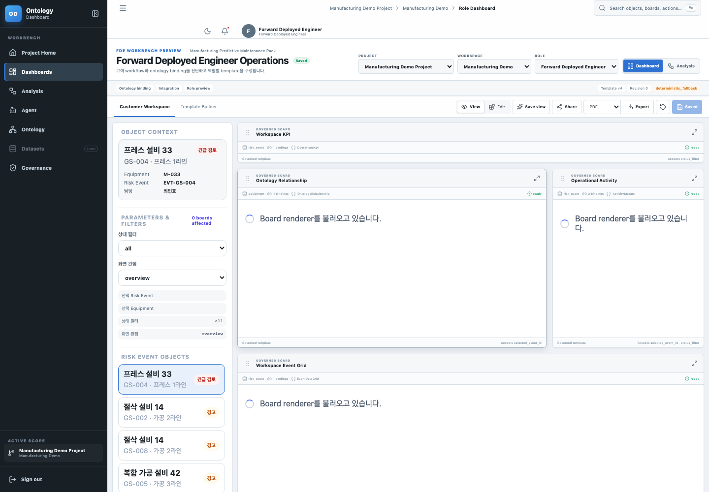

Role Dashboard
Operational dashboard composition and chart-to-chart filtering.


HierarchyBoth prioritize global navigation, active scope, parameters, and a dense governed canvas.
InteractionLocal implementation exposes server-filter state, affected boards, tabs, edit/view, export, and object drill-down.
Human reviewCheck whether local header height and status strip consume too much vertical space beside the official reference.